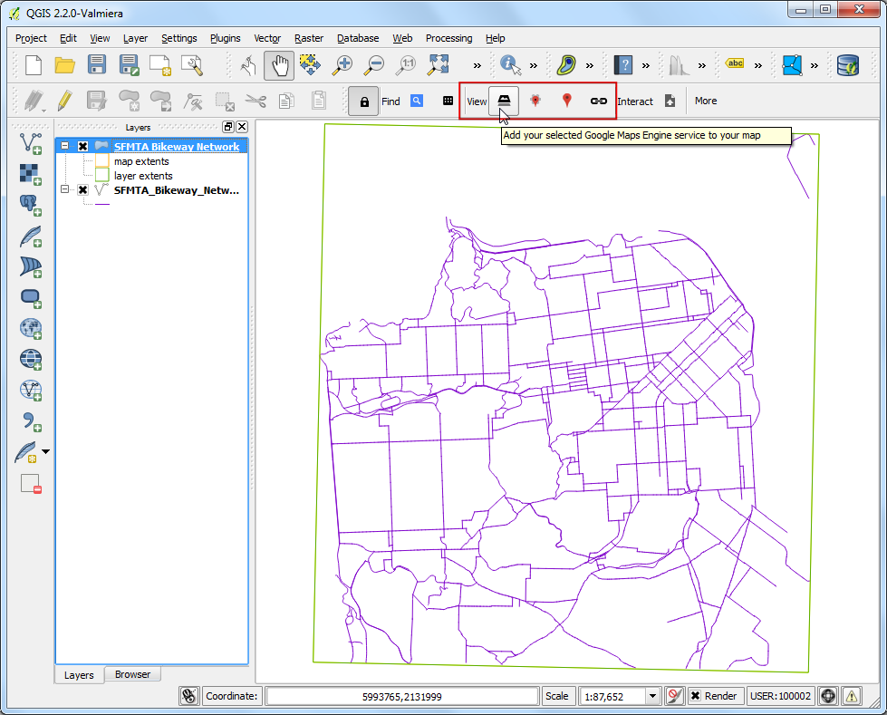

Lavorare con gli Attributi
[ Download PDF A4 Letter ]
Il GIS è costituito di due parti, geometrie e attributi. Gli attributi sono dati strutturati il cui contenuto è riferito a ciascuna geometria. Questa esercitazione mostra come esaminare gli attributi e come effettuare delle interrogazioni elementari sul loro contenuto.
Descrizione dell’esercizio
Il dataset che utilizzeremo in questo esercizio contiene informazioni circa le aree popolate del pianeta. Il nostro obiettivo è quello di cercare e trovare le capitali del mondo che hanno un numero di abitanti superiore a un 1000000.
Procedimento
Dopo che avete scaricato i dati, aprite QGIS. Andate su .

Fate Click su Sfoglia e portatevi nella cartella dove avete scaricato i dati.

Individuate e scaricate il file archivio ne_10m_populated_places_simple.zip.
Non avete bisogno di estrarre il file. QGIS, di solito, è in grado di leggere direttamente i file con estensione .zip. Selezionate il file e fate click su Apri. (Al variare delle versioni di QGIS e dei sistemi operativi, può accadere in rari casi, che sia necessario estrarre i file .zip in modo tradizionale, cioè etraendoli in una cartella e poi aprendo i file estratti da quella posizione. N.d.T.).

Apparirà una finestra di dialogo che vi chiederà di selezionare il layer da aprire. Selezionate ne_10m_populated_places_simple.shp e fate click su OK.

Il layer selezionato a questo punto verrà caricato in QGIS e vedrete comparire numerosi punti che indicano i luoghi popolati del pianeta.

Per esaminare gli attributi fate click con il tasto destro sul layer e selezionate Apri Tabella degli Attributi.

Esplorate i vari attributi e i relativi valori.

A noi interessa la popolazione per ciascuna geometria, quindi pop_max è il campo che dobbiamo considerare. Potete fare due volte click sull’intestazione della colonna per ordinare la colonna in ordine discendente.

Ora sia pronti per effettuare le nostre interrogazioni su questi attributi. Seleziona elementi usando un’espressione.

Nella finestra Seleziona elementi usando un’espressione aprire la sezione Campi e Valori e fare doppio click sulla voce pop_max. Noterete che questa voce verrà aggiunta alla sezione espressioni in basso. Se non siete sicuri circa il campo dei valori potete fare click sul pulsante Carica tutti i valori unici per vedere quali valori sono presenti nel dataset. In questo esercizio vogliamo trovare tutte le feature che hanno una popolazione maggiore di 1000000. Quindi completate l’espressione come “pop_max” > 1000000 e fate click su Seleziona.

Fate click su Chiudi e tornate alla finestra principale di QGIS. Noterete che un sottoinsieme di punti viene ora visualizzato in giallo. Questo è il risultato della vostra query e quelli che vedete sono i luoghi del dataset che hanno il valore dell’attributo pop_max maggiore di 1000000.

L’obiettivo dell’esercizio è quello di trovare tra questi luoghi quelli che sono capitale di una nazione. Raffiniamo la nostra query per selezionare soltanto le capitali. Fate Click sul pulsante Seleziona elementi usando un’ espressione nella tabella degli attributi.

Nel campo che contiene il dato adm0cap il valore 1 indica che il posto è una capitale.
Inserite questa espressione: “adm0cap” = 1. Dal momento che intendiamo effettuare questa ricerca all’interno dei risultati dell’interrogazione precedente, selezioniamo il pulsante Seleziona dentro la selezione con l’apposito menu a tendina e poi facciamo click su di esso.

Fate click su Chiudi e tornate alla finestra principale di QGIS. Noterete un sottoinsieme di punti selezionati. Questo è il risultato della seconda query e mostra tutti i luoghi del nostro dataset che sono capitali di una nazione e che hanno una popolazione maggiore di 1000000.

Salviamo i nostri risultati in un layer separato. Tasto destro sul layer e selezionate Salva la selezione con nome....

Il formato del file sarà ESRI Shapefile e potete inserire come nome del file di output large_capital_cities.shp Fate click sulla casella di opzione Aggiungi il file salvato sulla mappa e poi fate click su OK.

Lo shapefile appena creato sarà caricato automaticamente in QGIS. Spegnete il layer dei luoghi popolati deselezionando la casella accanto. Ora potrete vedere solo le geometrie del layer appena creato contentente le città del mondo che sono capitali e che hanno una popolazione maggiore di 1000000.